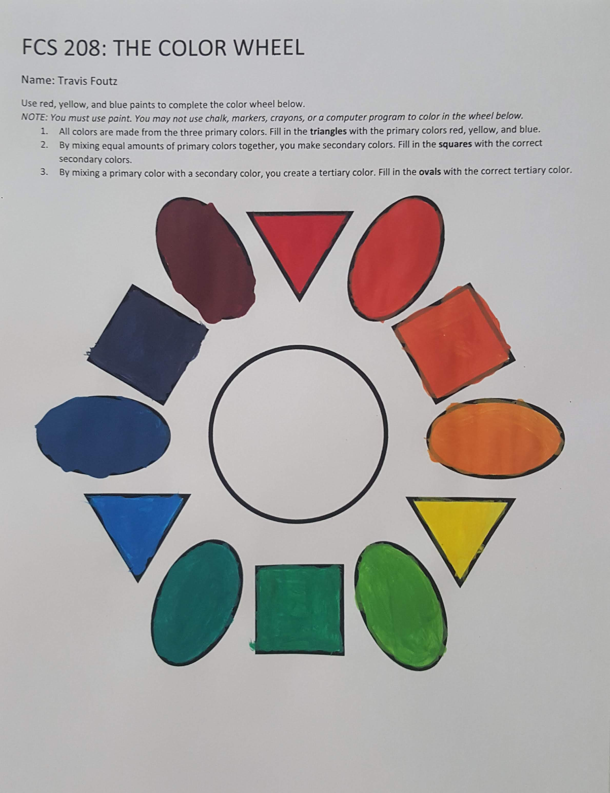
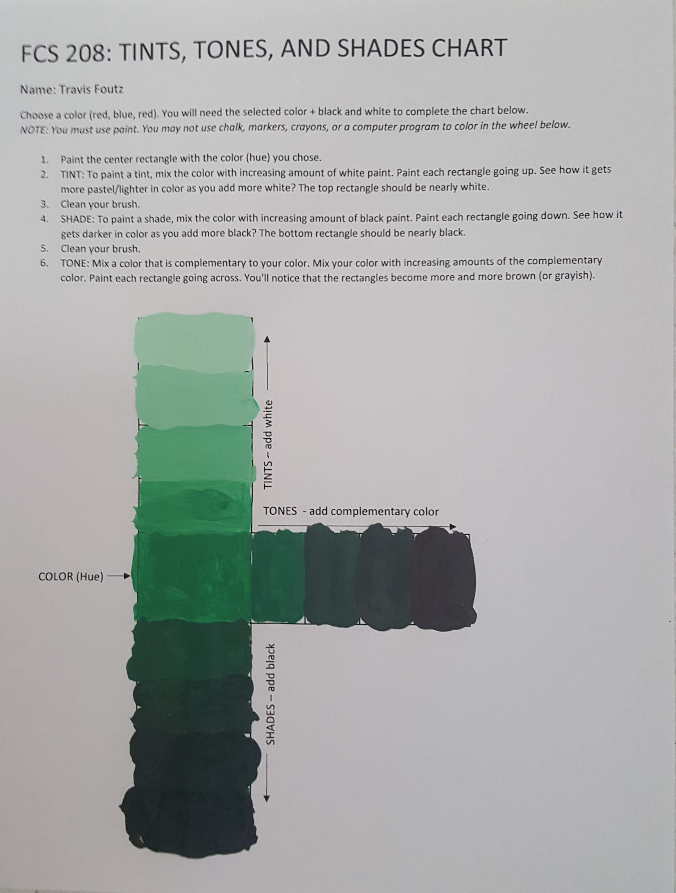

↵ Back to ePorfolio
FCS 345: Fitting and Alteration
Course Work
Career Kit: Textile Reference Guide (Part 1)
Objectives: Review study material on how to perform a fabric burn test and identify results. Perform burn test on four differing types of fabric swatches. Record the results to identify each type of fabric.
Learning: I discussed the results of the burn lab with my mother. She had a question about the differences in the odors of burning natural and synthetic fibers. In addition to the descriptions from the chart, I summarized that, in general, natural fibers gave of the smell of either paper or hair, and had a more organic smell to them, as opposed to the strong chemical smells of synthetic fibers. After explaining the residual material after burning, my mother mentioned played a huge part in her decision of fabric for the clothing she made for her children. The synthetic types were avoided to lessen the harm in the case of the clothing catching fire.
This burn test seemed to only generally cover a few of the more popular type of fabrics, and did not go in-depth into blended fabrics. I could try doing an online search to see if anybody has written a more in-depth fabric burning guide.
Career Kit: Textile Reference Guide (Part 2)
Objectives: Study weaving patterns. Following the provided instructions, make three woven paper mats using different weaves (plain, twil, and satin.
Learning: Creating the weaves using paper allowed me see how it affects the characteristics of the fabric. For example, the plain weave had the highest structural integrity, as the fibers wrapped around each other at a higher frequency. And the satin weave, with its fibers being less intertwined, had a greater degree of drapability. But other factors, such as thread count, play a part in determining overall properties.
Assignment: Color Wheel and Tints, Tones, Shades
Objectives: Paint a color wheel and paint a chart to demonstrate how tints, tones, and shades are created and learn the basics of the visual color spectrum.
Learning: Knowing that colors are made by mixing colors and actually mixing colors to get a desired color are quite different from each other. Doing the physical aspect of mixing opened my eyes to the skills it takes.
 